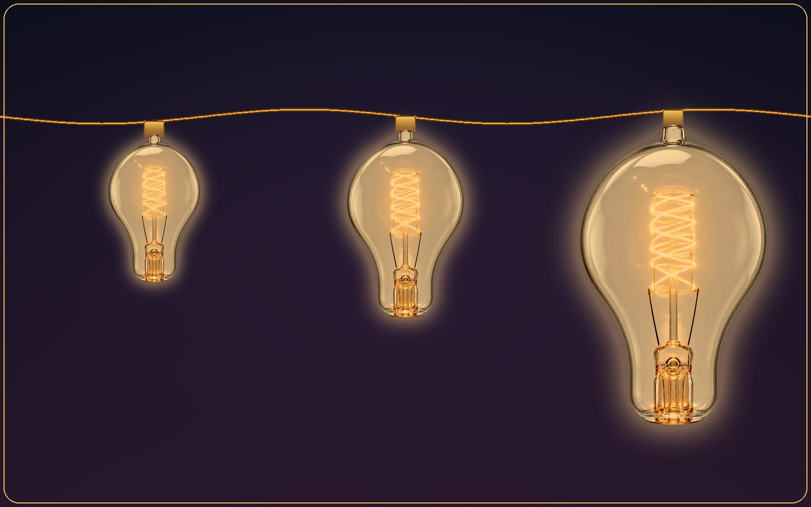
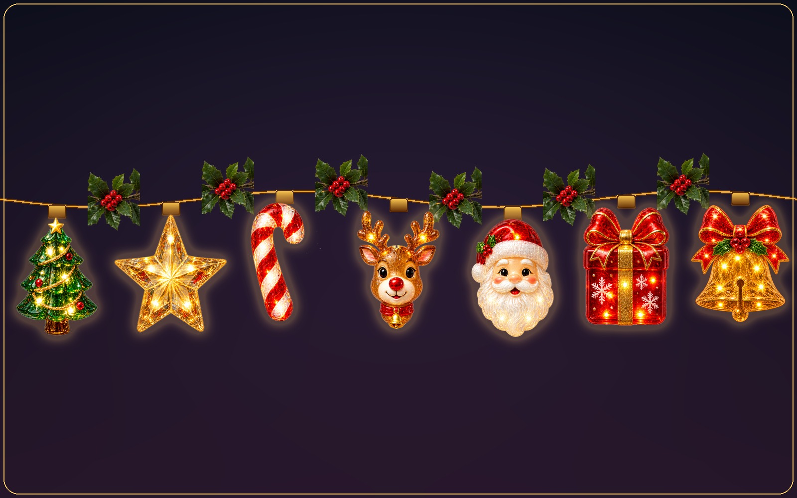

Bulb sizes and shapes
As subtle or as bold as you want.
Small, Medium, Large, or XL—shown here at Small, Medium, and XL. Pick a size that stays out of the way or one that makes a statement.
Small app. Big atmosphere.
Every control is close at hand in the menu bar, while the lights stay quietly behind your work.

Bulb sizes and shapes
Small, Medium, Large, or XL—shown here at Small, Medium, and XL. Pick a size that stays out of the way or one that makes a statement.

Garlands and wreaths
Selected collections drape real garland artwork between the bulbs. Move your cursor toward the menu bar or the Dock and the whole string—garland included—slides out of view in an instant, then settles back the moment you're clear.
Everything within reach
Fine-tune how Desktop Lights looks and behaves without turning decoration into a distraction.
Turn lights on or off and switch looks without opening a full-size app.
Decorate the main display or bring the same atmosphere across your setup.
Frame all sides or select the top, bottom, left, or right edges.
Use warm classics, coordinated color sets, or collection-specific tones.
Running lights, alternating glow, twinkle, all-blink, and steady light.
Slow the scene down for calm or make it lively for celebrations.
Display coordinated greeting designs included with select seasonal collections.
Toggle the lights quickly without interrupting your current task.
Have your preferred lights ready when you start your Mac.
Installed collections and saved preferences remain ready without a constant connection.
Basic Lights and Everyday Joy are included, with handcrafted collections available when you want more.